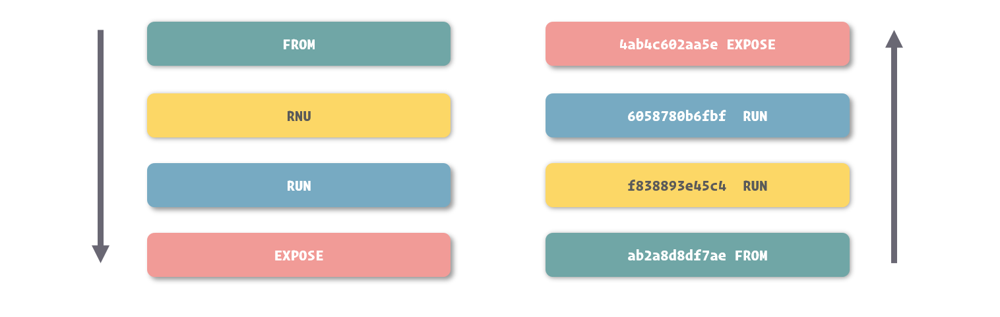
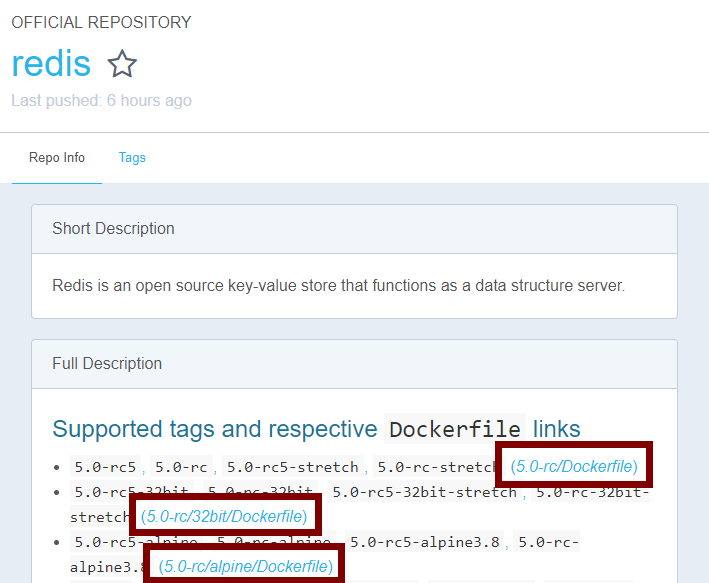
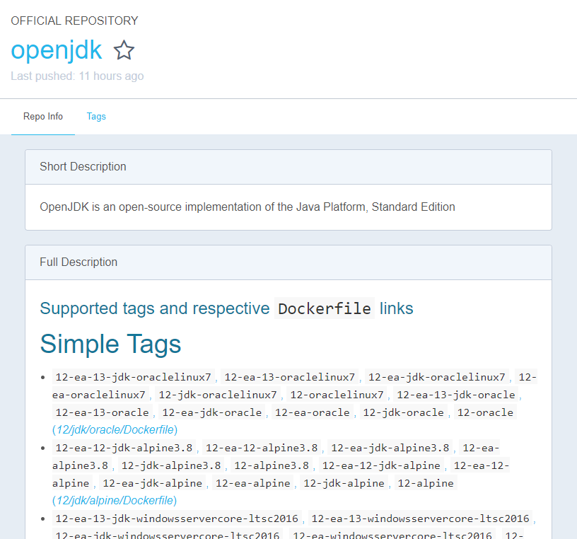
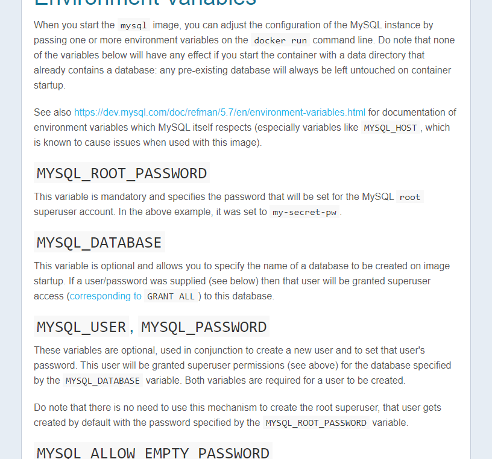
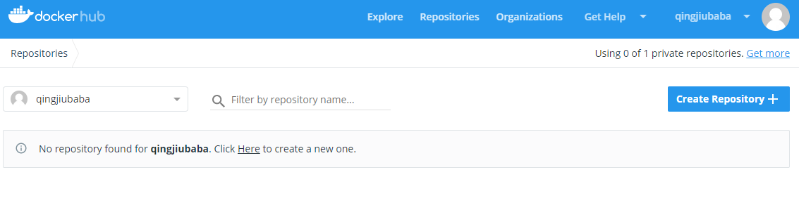
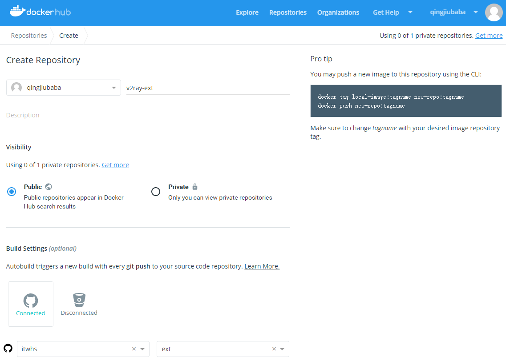
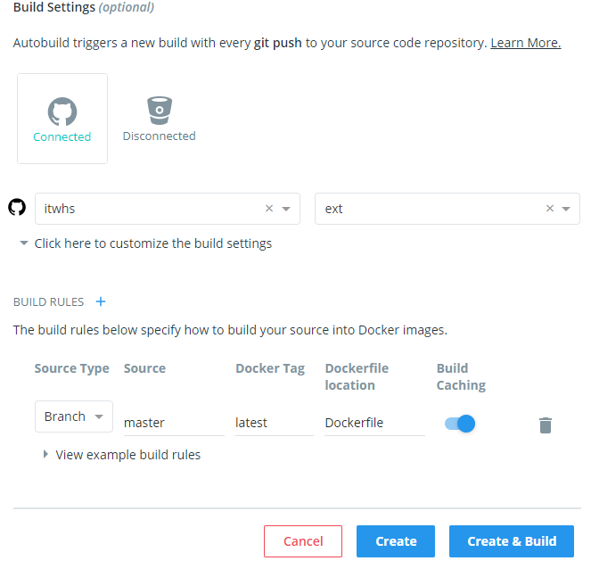
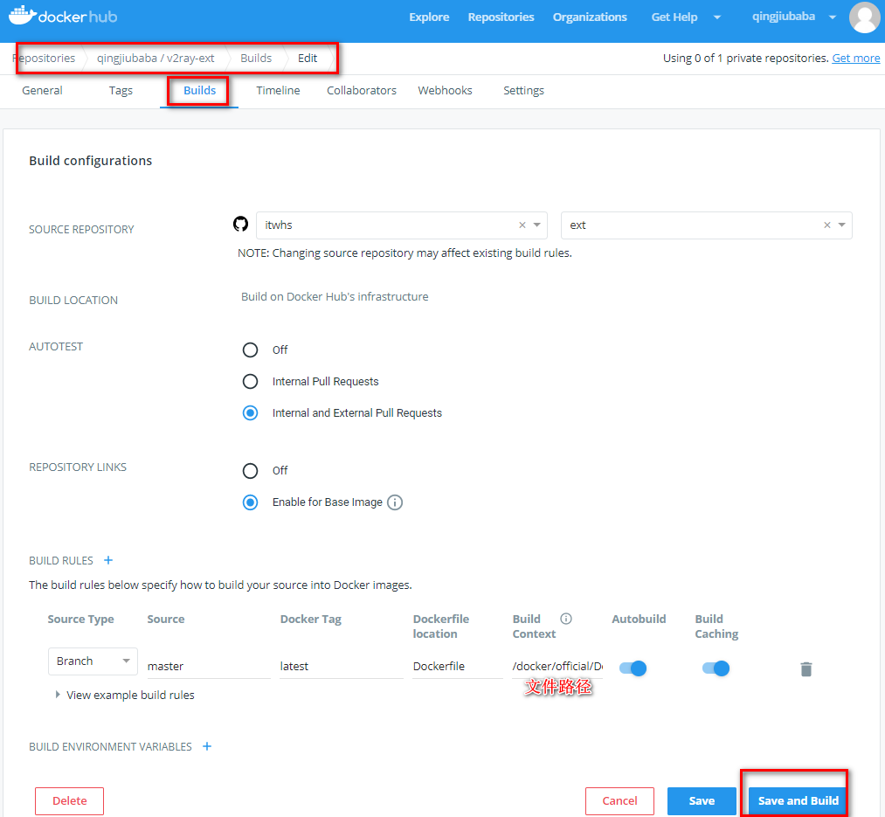
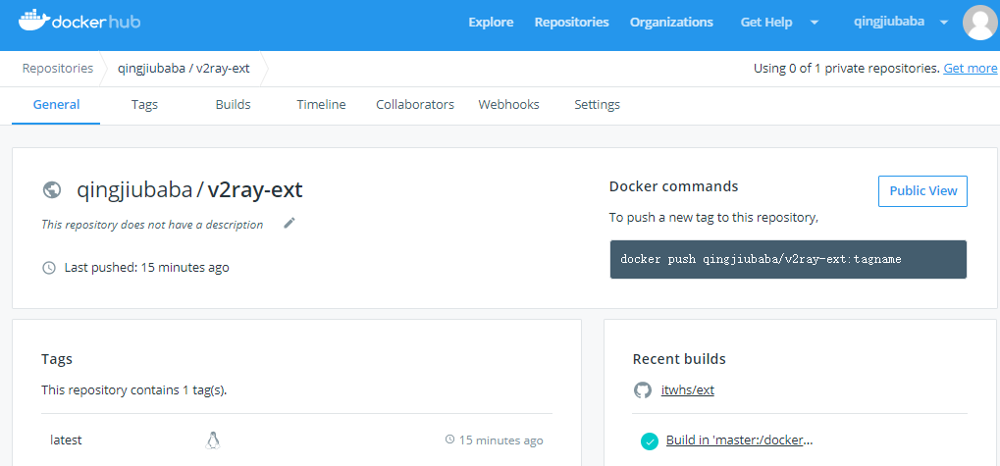
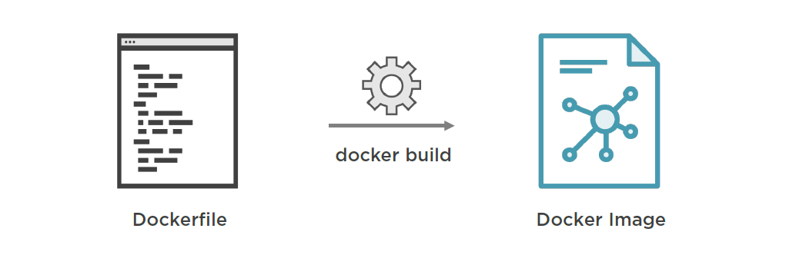

Docker操作镜像

文章目录
保存和共享镜像
让 Docker 引以为傲的是它能够实现相比于其他虚拟化软件更快的环境迁移和部署，在这件事情上，轻量级的容器和镜像结构的设计无疑发挥了巨大的作用。通过将容器打包成镜像，再利用体积远小于其他虚拟化软件的 Docker 镜像，我们可以更快的将它们复制到其他的机器上。在这一节中，我们就专门来谈谈如何进行这样的迁移。
提交容器更改
之前我们已经介绍过了，Docker 镜像的本质是多个基于 UnionFS 的镜像层依次挂载的结果，而容器的文件系统则是在以只读方式挂载镜像后增加的一个可读可写的沙盒环境。
基于这样的结构，Docker 中为我们提供了将容器中的这个可读可写的沙盒环境持久化为一个镜像层的方法。更浅显的说，就是我们能够很轻松的在 Docker 里将容器内的修改记录下来，保存为一个新的镜像。
将容器修改的内容保存为镜像的命令是 docker commit，由于镜像的结构很像代码仓库里的修改记录，而记录容器修改的过程又像是在提交代码，所以这里我们更形象的称之为提交容器的更改。
1 2 |
$ sudo docker commit webapp sha256:0bc42f7ff218029c6c4199ab5c75ab83aeaaed3b5c731f715a3e807dda61d19e |
Docker 执行将容器内沙盒文件系统记录成镜像层的时候，会先暂停容器的运行，以保证容器内的文件系统处于一个相对稳定的状态，确保数据的一致性。
在使用 docker commit 提交镜像更新后，我们可以得到 Docker 创建的新镜像的 ID，之后我们也能够从本地镜像列表中找到它。
1 2 3 4 |
$ sudo docker images REPOSITORY TAG IMAGE ID CREATED SIZE <none> <none> 0bc42f7ff218 3 seconds ago 372MB ## ...... |
像通过 Git 等代码仓库软件提交代码一样，我们还能在提交容器更改的时候给出一个提交信息，方便以后查询。
1
|
$ sudo docker commit -m "Configured" webapp |
为镜像命名
在上面的例子里，我们发现提交容器更新后产生的镜像并没 REPOSITORY 和 TAG 的内容，也就是说，这个新的镜像还没有名字。
之前我们谈到过，使用没有名字的镜像并不是很好的选择，因为我们无法直观的看到我们正在使用什么。好在 Docker 为我们提供了一个为镜像取名的命令，也就是 docker tag 命令。
1
|
$ sudo docker tag 0bc42f7ff218 webapp:1.0 |
使用 docker tag 能够为未命名的镜像指定镜像名，也能够对已有的镜像创建一个新的命名。
1
|
$ sudo docker tag webapp:1.0 webapp:latest |
当我们对未命名的镜像进行命名后，Docker 就不会在镜像列表里继续显示这个镜像，取而代之的是我们新的命名。而如果我们对以后镜像使用 docker tag，旧的镜像依然会存在于镜像列表中。
1 2 3 4 5 |
$ sudo docker images REPOSITORY TAG IMAGE ID CREATED SIZE webapp 1.0 0bc42f7ff218 29 minutes ago 372MB webapp latest 0bc42f7ff218 29 minutes ago 372MB ## ...... |
由于镜像是对镜像层的引用记录，所以我们对镜像进行命名后，虽然能够在镜像列表里同时看到新老两个镜像，实质是它们其实引用着相同的镜像层，这个我们能够从镜像 ID 中看得出来 ( 因为镜像 ID 就是最上层镜像层的 ID )。正是这个原因，我们虽然创建了新的镜像，但对物理存储的占用空间却不是镜像大小直接翻倍，并且创建也在霎那之间。
除了使用 docker tag 在容器提交为新的镜像后为镜像命名这种方式外，我们还可以直接在 docker commit 命令里指定新的镜像名，这种方式在使用容器提交时会更加方便。
1
|
$ sudo docker commit -m "Upgrade" webapp webapp：2.0 |
镜像的迁移
在我们将更新导出为镜像后，就可以开始迁移镜像的工作了。
由于 Docker 是以集中的方式管理镜像的，所以在迁移之前，我们要先从 Docker 中取出镜像。docker save 命令可以将镜像输出，提供了一种让我们保存镜像到 Docker 外部的方式。
1
|
$ sudo docker save webapp:1.0 > webapp-1.0.tar |
在默认定义下，docker save 命令会将镜像内容放入输出流中，这就需要我们使用管道进行接收 ( 也就是命令中的 > 符号 )，这属于 Linux 等系统控制台中的用法，这里我们不做详细讲解。
管道这种用法有时候依然不太友好，docker save 命令还为我们提供了 -o 选项，用来指定输出文件，使用这个选项可以让命令更具有统一性。
1
|
$ sudo docker save -o ./webapp-1.0.tar webapp:1.0 |
在镜像导出之后，我们就可以找到已经存储镜像内容的 webapp-1.0.tar 这个文件了。有兴趣的朋友，可以使用解压软件查看其中的内容，你会看到里面其实就是镜像所基于的几个镜像层的记录文件。
导入镜像
我们可以通过很多种方式将导出的镜像文件复制到另一台机器上，在这么操作之后，我们就要将镜像导入到这台新机器中运行的 Docker 中。
导入镜像的方式也很简单，使用与 docker save 相对的 docker load 命令即可。
1
|
$ sudo docker load < webapp-1.0.tar |
相对的，docker load 命令是从输入流中读取镜像的数据，所以我们这里也要使用管道来传输内容。当然，我们也能够使用 -i 选项指定输入文件。
1
|
$ sudo docker load -i webapp-1.0.tar |
镜像导入后，我们就可以通过 docker images 看到它了，导入的镜像会延用原有的镜像名称。
批量迁移
通过 docker save 和 docker load 命令我们还能够批量迁移镜像，只要我们在 docker save 中传入多个镜像名作为参数，它就能够将这些镜像都打成一个包，便于我们一次性迁移多个镜像。
1
|
$ sudo docker save -o ./images.tar webapp:1.0 nginx:1.12 mysql:5.7 |
装有多个镜像的包可以直接被 docker load 识别和读取，我们将这个包导入后，所有其中装载的镜像都会被导入到 Docker 之中。
导出和导入容器
也许 Docker 的开发者认为，提交镜像修改，再导出镜像进行迁移的方法还不够效率，所以还为我们提供了一个导出容器的方法。
使用 docker export 命令我们可以直接导出容器，我们可以把它简单的理解为 docker commit 与 docker save 的结合体。
1
|
$ sudo docker export -o ./webapp.tar webapp |
相对的，使用 docker export 导出的容器包，我们可以使用 docker import 导入。这里需要注意的是，使用 docker import 并非直接将容器导入，而是将容器运行时的内容以镜像的形式导入。所以导入的结果其实是一个镜像，而不是容器。在 docker import 的参数里，我们可以给这个镜像命名。
1
|
$ sudo docker import ./webapp.tar webapp:1.0 |
在开发的过程中，使用 docker save 和 docker load，或者是使用 docker export 和 docker import 都可以达到迁移容器或者镜像的目的。
常见 Dockerfile 使用技巧
在掌握 Dockerfile 的基本使用方法后，我们再来了解一些在开发中使用 Dockerfile 的技巧。这一小节的展现方式与之前的略有不同，其主要来自阅读收集和我自身在使用中的最佳实践。也许这里面介绍的不是最为标准或是合乎规范的方式，但一定是能够直接帮助大家在开发中使用 Docker 提升生产力的方式。下面就让我们来看看这些关于 Dockerfile 的使用技巧。
构建中使用变量
在实际编写 Dockerfile 时，与搭建环境相关的指令会是其中占有大部分比例的指令。在搭建程序所需运行环境时，难免涉及到一些可变量，例如依赖软件的版本，编译的参数等等。我们可以直接将这些数据写入到 Dockerfile 中完全没有问题，有问题的是这些可变量我们会经常调整，在调整时就需要我们到 Dockerfile 中找到它们并进行更改，如果只是简单的 Dockerfile 文件尚且好说，但如果是相对复杂或是存在多处变量的 Dockerfile 文件，这个工作就变得繁琐而让人烦躁了。
在 Dockerfile 里，我们可以用 ARG 指令来建立一个参数变量，我们可以在构建时通过构建指令传入这个参数变量，并且在 Dockerfile 里使用它。
例如，我们希望通过参数变量控制 Dockerfile 中某个程序的版本，在构建时安装我们指定版本的软件，我们可以通过 ARG 定义的参数作为占位符，替换版本定义的部分。
1 2 3 4 5 6 7 8 9 10 11 12 |
FROM debian:stretch-slim ## ...... ARG TOMCAT_MAJOR ARG TOMCAT_VERSION ## ...... RUN wget -O tomcat.tar.gz "https://www.apache.org/dyn/closer.cgi?action=download&filename=tomcat/tomcat-$TOMCAT_MAJOR/v$TOMCAT_VERSION/bin/apache-tomcat-$TOMCAT_VERSION.tar.gz" ## ...... |
在这个例子里，我们将 Tomcat 的版本号通过 ARG 指令定义为参数变量，在调用下载 Tomcat 包时，使用变量替换掉下载地址中的版本号。通过这样的定义，就可以让我们在不对 Dockerfile 进行大幅修改的前提下，轻松实现对 Tomcat 版本的切换并重新构建镜像了。
如果我们需要通过这个 Dockerfile 文件构建 Tomcat 镜像，我们可以在构建时通过 docker build 的 --build-arg 选项来设置参数变量。
1
|
$ sudo docker build --build-arg TOMCAT_MAJOR=8 --build-arg TOMCAT_VERSION=8.0.53 -t tomcat:8.0 ./tomcat |
环境变量
环境变量也是用来定义参数的东西，与 ARG 指令相类似，环境变量的定义是通过 ENV 这个指令来完成的。
1 2 3 4 5 6 7 8 9 10 |
FROM debian:stretch-slim ## ...... ENV TOMCAT_MAJOR 8 ENV TOMCAT_VERSION 8.0.53 ## ...... RUN wget -O tomcat.tar.gz "https://www.apache.org/dyn/closer.cgi?action=download&filename=tomcat/tomcat-$TOMCAT_MAJOR/v$TOMCAT_VERSION/bin/apache-tomcat-$TOMCAT_VERSION.tar.gz" |
环境变量的使用方法与参数变量一样，也都是能够直接替换指令参数中的内容。
与参数变量只能影响构建过程不同，环境变量不仅能够影响构建，还能够影响基于此镜像创建的容器。环境变量设置的实质，其实就是定义操作系统环境变量，所以在运行的容器里，一样拥有这些变量，而容器中运行的程序也能够得到这些变量的值。
另一个不同点是，环境变量的值不是在构建指令中传入的，而是在 Dockerfile 中编写的，所以如果我们要修改环境变量的值，我们需要到 Dockerfile 修改。不过即使这样，只要我们将 ENV 定义放在 Dockerfile 前部容易查找的地方，其依然可以很快的帮助我们切换镜像环境中的一些内容。
由于环境变量在容器运行时依然有效，所以运行容器时我们还可以对其进行覆盖，在创建容器时使用 -e 或是 --env 选项，可以对环境变量的值进行修改或定义新的环境变量。
1
|
$ sudo docker run -e MYSQL_ROOT_PASSWORD=my-secret-pw -d mysql:5.7 |
事实上，这种用法在我们开发中是非常常见的。也正是因为这种允许运行时配置的方法存在，环境变量和定义它的 ENV 指令，是我们更常使用的指令，我们会优先选择它们来实现对变量的操作。
关于环境变量是如何能够帮助我们更轻松的处理 Docker 镜像和容器使用等问题，我们会在下一节中进行实际展示，通过例子大家能够更容易理解它的原理。
另外需要说明一点，通过 ENV 指令和 ARG 指令所定义的参数，在使用时都是采用 $ + NAME 这种形式来占位的，所以它们之间的定义就存在冲突的可能性。对于这种场景，大家只需要记住，ENV 指令所定义的变量，永远会覆盖 ARG 所定义的变量，即使它们定时的顺序是相反的。
合并命令
在上一节我们展示的完整的官方 Redis 镜像的 Dockerfile 中，我们会发现 RUN 等指令里会聚合下大量的代码。
事实上，下面两种写法对于搭建的环境来说是没有太大区别的。
1 2 3 |
RUN apt-get update; \
apt-get install -y --no-install-recommends $fetchDeps; \
rm -rf /var/lib/apt/lists/*; |
1 2 3 |
RUN apt-get update RUN apt-get install -y --no-install-recommends $fetchDeps RUN rm -rf /var/lib/apt/lists/* |
那为什么我们更多见的是第一种形式而非第二种呢？这就要从镜像构建的过程说起了。
看似连续的镜像构建过程，其实是由多个小段组成。每当一条能够形成对文件系统改动的指令在被执行前，Docker 先会基于上条命令的结果启动一个容器，在容器中运行这条指令的内容，之后将结果打包成一个镜像层，如此反复，最终形成镜像。

所以说，我们之前谈到镜像是由多个镜像层叠加而得，而这些镜像层其实就是在我们 Dockerfile 中每条指令所生成的。
了解了这个原理，大家就很容易理解为什么绝大多数镜像会将命令合并到一条指令中，因为这种做法不但减少了镜像层的数量，也减少了镜像构建过程中反复创建容器的次数，提高了镜像构建的速度。
构建缓存
Docker 在镜像构建的过程中，还支持一种缓存策略来提高镜像的构建速度。
由于镜像是多个指令所创建的镜像层组合而得，那么如果我们判断新编译的镜像层与已经存在的镜像层未发生变化，那么我们完全可以直接利用之前构建的结果，而不需要再执行这条构建指令，这就是镜像构建缓存的原理。
那么 Docker 是如何判断镜像层与之前的镜像间不存在变化的呢？这主要参考两个维度，第一是所基于的镜像层是否一样，第二是用于生成镜像层的指令的内容是否一样。
基于这个原则，我们在条件允许的前提下，更建议将不容易发生变化的搭建过程放到 Dockerfile 的前部，充分利用构建缓存提高镜像构建的速度。另外，指令的合并也不宜过度，而是将易变和不易变的过程拆分，分别放到不同的指令里。
在另外一些时候，我们可能不希望 Docker 在构建镜像时使用构建缓存，这时我们可以通过 --no-cache 选项来禁用它。
1
|
$ sudo docker build --no-cache ./webapp |
搭配 ENTRYPOINT 和 CMD
上一节我们谈到了 ENTRYPOINT 和 CMD 这两个命令，也解释了这两个命令的目的，即都是用来指定基于此镜像所创建容器里主进程的启动命令的。
两个指令的区别在于，ENTRYPOINT 指令的优先级高于 CMD 指令。当 ENTRYPOINT 和 CMD 同时在镜像中被指定时，CMD 里的内容会作为 ENTRYPOINT 的参数，两者拼接之后，才是最终执行的命令。
为了更好的让大家理解，这里索性列出所有的 ENTRYPOINT 与 CMD 的组合，供大家参考。
ENTRYPOINT
CMD
实际执行
ENTRYPOINT ["/bin/ep", "arge"]
/bin/ep arge
ENTRYPOINT /bin/ep arge
/bin/sh -c /bin/ep arge
CMD ["/bin/exec", "args"]
/bin/exec args
CMD /bin/exec args
/bin/sh -c /bin/exec args
ENTRYPOINT ["/bin/ep", "arge"]
CMD ["/bin/exec", "argc"]
/bin/ep arge /bin/exec argc
ENTRYPOINT ["/bin/ep", "arge"]
CMD /bin/exec args
/bin/ep arge /bin/sh -c /bin/exec args
ENTRYPOINT /bin/ep arge
CMD ["/bin/exec", "argc"]
/bin/sh -c /bin/ep arge /bin/exec argc
ENTRYPOINT /bin/ep arge
CMD /bin/exec args
/bin/sh -c /bin/ep arge /bin/sh -c /bin/exec args
有的读者会存在疑问，既然两者都是用来定义容器启动命令的，为什么还要分成两个，合并为一个指令岂不是更方便吗？
这其实在于 ENTRYPOINT 和 CMD 设计的目的是不同的。ENTRYPOINT 指令主要用于对容器进行一些初始化，而 CMD 指令则用于真正定义容器中主程序的启动命令。
另外，我们之前谈到创建容器时可以改写容器主程序的启动命令，而这个覆盖只会覆盖 CMD 中定义的内容，而不会影响 ENTRYPOINT 中的内容。
我们依然以之前的 Redis 镜像为例，这是 Redis 镜像中对 ENTRYPOINT 和 CMD 的定义。
1 2 3 4 5 6 7 8 9 |
## ...... COPY docker-entrypoint.sh /usr/local/bin/ ENTRYPOINT ["docker-entrypoint.sh"] ## ...... CMD ["redis-server"] |
可以很清晰的看到，CMD 指令定义的正是启动 Redis 的服务程序，而 ENTRYPOINT 使用的是一个外部引入的脚本文件。
事实上，使用脚本文件来作为 ENTRYPOINT 的内容是常见的做法，因为对容器运行初始化的命令相对较多，全部直接放置在 ENTRYPOINT 后会特别复杂。
我们来看看 Redis 中的 ENTRYPOINT 脚本，可以看到其中会根据脚本参数进行一些处理，而脚本的参数，其实就是 CMD 中定义的内容。
1 2 3 4 5 6 7 8 9 10 11 12 13 14 15 16 |
#!/bin/sh set -e # first arg is `-f` or `--some-option` # or first arg is `something.conf` if [ "${1#-}" != "$1" ] || [ "${1%.conf}" != "$1" ]; then set -- redis-server "$@" fi # allow the container to be started with `--user` if [ "$1" = 'redis-server' -a "$(id -u)" = '0' ]; then find . \! -user redis -exec chown redis '{}' + exec gosu redis "$0" "$@" fi exec "$@" |
这里我们要关注脚本最后的一条命令，也就是 exec "$@"。在很多镜像的 ENTRYPOINT 脚本里，我们都会看到这条命令，其作用其实很简单，就是运行一个程序，而运行命令就是 ENTRYPOINT 脚本的参数。反过来，由于 ENTRYPOINT 脚本的参数就是 CMD 指令中的内容，所以实际执行的就是 CMD 里的命令。
所以说，虽然 Docker 对容器启动命令的结合机制为 CMD 作为 ENTRYPOINT 的参数，合并后执行 ENTRYPOINT 中的定义，但实际在我们使用中，我们还会在 ENTRYPOINT 的脚本里代理到 CMD 命令上。
相对来说，Redis 的 ENTRYPOINT 内容还是简单的，在掌握了 ENTRYPOINT 的相关作用后，大家可以尝试阅读和编写一些复杂的 ENTRYPOINT 脚本。
临摹案例
上面提及的几项只是几个比较常见的 Dockerfile 最佳实践，其实在编写 Dockerfile 时，还有很多不成文的小技巧。
想要学好 Dockerfile 的编写，阅读和思考前人的作品是必不可少的。
前面我们介绍了，Docker 官方提供的 Docker Hub 是 Docker 镜像的中央仓库，它除了镜像丰富之外，给我们带来的另一项好处就是其大部分镜像都是能够直接提供 Dockerfile 文件给我们参考的。
要得到镜像的 Dockerfile 文件，我们可以进入到镜像的详情页面，在介绍中，镜像作者们通常会直接把 Dockerfile 的连接放在那里。

使用 Docker Hub 中的镜像
自己编写 Dockerfile 能够很好的实现我们想要的程序运行环境，不过如果装有我们想要环境的镜像已经由热心的开发者构建好并共享在 Docker Hub 上，直接使用它们就会远比自己编写 Dockerfile 并进行构建要来的简单的多了。事实上，在开发过程中我们用到的镜像大部分还是直接采用 Docker Hub 中已经存在的镜像的，即使自己编写 Dockerfile，也只是对已有镜像进行简单的改动，很少会从零开始搭建镜像。在这一节中，我们要来看看如何更好地使用 Docker Hub 上由其他开发者共享的镜像。
选择镜像与程序版本
由于 Docker 的容器设计是程序即容器的，所以组成我们服务系统的多个程序一般会搭建在多个容器里，互相之间协作提供服务。例如一套最简单的 Web 服务，我们可能会需要 Java 容器来运行基于 Spring Boot 的程序，需要 MySQL 容器来提供数据库支持，需要 Redis 容器来作为高速 KV 存储等等。装有这些程序的镜像我们都可以很容易的在 Docker Hub 上找到并直接使用，但在我们使用前，光选择镜像还是不够的，我们还得根据需要选择对应程序版本的镜像。
虽然我们常把软件的版本放在 Tag 里作为镜像名的一部分，但对于一些复杂的应用，除了版本外，还存在很多的变量，镜像的维护者们也喜欢将这些变量一同组合到镜像的 Tag 里，所以我们在使用镜像前，一定要先了解不同 Tag 对应的不同内容。
这里我们来看个例子，下面是由 Docker 官方提供的 OpenJDK 镜像的说明页面。

通常来说，镜像的维护者会在镜像介绍中展示出镜像所有的 Tag，如果没有，我们也能够从页面上的 Tags 导航里进入到镜像标签列表页面。
在 OpenJDK 镜像的 Tag 列表里，我们可以看到同样版本号的镜像就存在多种标签。在这些不同的标签上，除了定义 OpenJDK 的版本，还有操作系统，软件提供者等信息。
镜像维护者为我们提供这么多的标签进行选择，其实方便了我们在不同场景下选择不同环境实现细节时，都能直接用到这个镜像，而不需要再单独编写 Dockerfile 并构建。
但是换句话说，正是有这么多不同标签的镜像存在，所以我们在选择的时候，更要仔细认真，找到我们想要的那个镜像。
Alpine 镜像
如果大家多接触几个镜像，就会发现带有 Alpine 的版本是许多镜像中都常见的标签。带有 Alpine 标签的镜像到底是什么样的存在呢？它与相同软件不同标签的镜像又有什么样的区别呢？
镜像标签中的 Alpine 其实指的是这个镜像内的文件系统内容，是基于 Alpine Linux 这个操作系统的。Alpine Linux 是一个相当精简的操作系统，而基于它的 Docker 镜像可以仅有数 MB 的尺寸。如果软件基于这样的系统镜像之上构建而得，可以想象新的镜像也是十分小巧的。
在 Docker 里，Alpine 系统的镜像到底有多小，我们不妨来与其他系统镜像做一个比较。
操作系统镜像
占用空间
alpine:latest
4.4 MB
ubuntu:latest
84.1 MB
debian:latest
101 MB
centos:latest
200 MB
可以看到，Alpine 系统镜像的尺寸要远小于其他常见的系统镜像。让我们再来比较同一个软件在基于普通系统的镜像和基于 Alpine 系统的镜像后尺寸上的区别。
镜像标签
占用空间
python:3.6-alpine
74.2 MB
python:3.6-jessie
697 MB
由于基于 Alpine 系统建立的软件镜像远远小于基于其他系统的软件镜像，它在网络传输上的优势尤为明显。如果我们选择这类的镜像，不但可以节约网络传输的时间，也能减少镜像对硬盘空间的占用。
当然，有优点也会有缺点，Alpine 镜像的缺点就在于它实在过于精简，以至于麻雀虽小，也无法做到五脏俱全了。在 Alpine 中缺少很多常见的工具和类库，以至于如果我们想基于软件 Alpine 标签的镜像进行二次构建，那搭建的过程会相当烦琐。所以如果你想要对软件镜像进行改造，并基于其构建新的镜像，那么 Alpine 镜像不是一个很好的选择 (这时候我们更提倡基于 Ubuntu、Debian、CentOS 这类相对完整的系统镜像来构建)。
对容器进行配置
除了合理选择镜像外，许多镜像还为我们提供了更加方便的功能，这些细节我们通常都可以在镜像的详情里阅读到。
这里我们以 MySQL 为例，看看通常我们是怎样阅读和使用镜像的特殊功能的。
自己安装过 MySQL 的朋友一定知道，搭建 MySQL 最麻烦的地方并不是安装的过程，而是安装后进行初始化配置的过程。就拿更改 root 账号的密码来说，在初始的 MySQL 里就要耗费不少工作量。
如果我们拿到一个 MySQL 镜像，运行起来的 MySQL 也就约等于一个刚刚安装好的程序，面临的正好是复杂的初始化过程。
好在 MySQL 镜像的维护者们为我们打造了一些自动化脚本，通过它们，我们只需要简单的传入几个参数，就能够快速实现对 MySQL 数据库的初始化。
在 MySQL 镜像的详情里，描述了我们要如何传入这些参数来启动 MySQL 容器。

对于 MySQL 镜像来说，进行软件配置的方法是通过环境变量的方式来实现的 ( 在其他的镜像里，还有通过启动命令、挂载等方式来实现的 )。我们只需要通过这些给出的环境变量，就可以初始化 MySQL 的配置了。
例如，我们可以通过下面的命令来直接建立 MySQL 中的用户和数据库。
1
|
$ sudo docker run --name mysql -e MYSQL_DATABASE=webapp -e MYSQL_USER=www -e MYSQL_PASSWORD=my-secret-pw -d mysql:5.7 |
通过这条命令启动的 MySQL 容器，在内部就已经完成了用户的创建和数据库的创建，我们通过 MySQL 客户端就能够直接登录这个用户和访问对应的数据库了。
如果深究 MySQL 是如何实现这样复杂的功能的，大家可以到 MySQL 镜像的 Dockerfile 源码库里，找到 docker-entrypoint.sh 这个脚本，所有的秘密正暗藏在其中。MySQL 正是利用了 ENTRYPOINT 指令进行初始化这种任务安排，对容器中的 MySQL 进行初始化的。
通过 MySQL 镜像这样的逻辑，大家还可以举一反三，了解其他镜像所特用的使用方法，甚至可以参考编写、构建一些能够提供这类方法的 Dockerfile 和镜像。
共享自己的镜像
如果我们希望将我们镜像公开给网络上的开发者们，那通过 Docker Hub 无疑是最佳的方式。
要在 Docker Hub 上共享镜像，我们必须有一个 Docker Hub 的账号，这自不必说了。在登录到我们账号的控制面板后，我们能够找到创建的按钮，在这里选择 Create Repository ( 创建自动构建 )。

自动构建镜像是 Docker Hub 为我们提供的一套镜像构建服务，我们只需要提供 Dockerfile 和相关的基本文件，Docker Hub 就能够在云端自动将它们构建成镜像，之后便可以让其他开发者通过 docker pull 命令拉取到这一镜像。
自动构建让不需要我们再用本机进行镜像的构建，既能节约时间，又能享受高速的云端机器构建。

在 Docker Hub 中并不直接存放我们用于构建的 Dockerfile 和相关文件，我们必须将 Docker Hub 账号授权到 GitHub 或是 Bitbucket 来从这些代码库中获取 Dockerfile 和相关文件。

在连接到 GitHub 或 Bitbucket 后，我们就可以选择我们存放 Dockerfile 和相关文件的代码仓库用来创建自动构建了。

在基本信息填写完成，点击创建按钮后，Docker Hub 就会开始根据我们 Dockerfile 的内容构建镜像了。而此时，我们也能够访问我们镜像专有的详情页面了。

在 Build 页面里，我们可以看到镜像构建的进度和详细的构建情况。
通过 Dockerfile 创建镜像
由于 Docker 镜像的结构优势，使它的占用空间远小于普通的虚拟机镜像，而这就大幅减少了 Docker 镜像在网络或者其他介质中转移所花费的时间，进而提高了我们进行迁移部署的效率。不过，你要是以为这就是 Docker 能够快速部署的终极大招那就大错特错了。在这一小节里，我们将谈到 Docker 特有的镜像构建定义文件，也就是 Dockerfile。通过了解它，你能真正体验一种进行秒级镜像迁移的乐趣。
关于 Dockerfile
Dockerfile 是 Docker 中用于定义镜像自动化构建流程的配置文件，在 Dockerfile 中，包含了构建镜像过程中需要执行的命令和其他操作。通过 Dockerfile 我们可以更加清晰、明确的给定 Docker 镜像的制作过程，而由于其仅是简单、小体积的文件，在网络等其他介质中传递的速度极快，能够更快的帮助我们实现容器迁移和集群部署。

通常来说，我们对 Dockerfile 的定义就是针对一个名为 Dockerfile 的文件，其虽然没有扩展名，但本质就是一个文本文件，所以我们可以通过常见的文本编辑器或者 IDE 创建和编辑它。
Dockerfile 的内容很简单，主要以两种形式呈现，一种是注释行，另一种是指令行。
1 2 |
# Comment INSTRUCTION arguments |
在 Dockerfile 中，拥有一套独立的指令语法，其用于给出镜像构建过程中所要执行的过程。Dockerfile 里的指令行，就是由指令与其相应的参数所组成。
环境搭建与镜像构建
如果具体来说 Dockerfile 的作用和其实际运转的机制，我们可以用一个我们开发中的常见流程来比较。
在一个完整的开发、测试、部署过程中，程序运行环境的定义通常是由开发人员来进行的，因为他们更加熟悉程序运转的各个细节，更适合搭建适合程序的运行环境。
在这样的前提下，为了方便测试和运维搭建相同的程序运行环境，常用的做法是由开发人员编写一套环境搭建手册，帮助测试人员和运维人员了解环境搭建的流程。
而 Dockerfile 就很像这样一个环境搭建手册，因为其中包含的就是一个构建容器的过程。
而比环境搭建手册更好的是，Dockerfile 在容器体系下能够完成自动构建，既不需要测试和运维人员深入理解环境中各个软件的具体细节，也不需要人工执行每一个搭建流程。
编写 Dockerfile
相对于之前我们介绍的提交容器修改，再进行镜像迁移的方式相比，使用 Dockerfile 进行这项工作有很多优势，我总结了几项尤为突出的。
- Dockerfile 的体积远小于镜像包，更容易进行快速迁移和部署。
- 环境构建流程记录了 Dockerfile 中，能够直观的看到镜像构建的顺序和逻辑。
- 使用 Dockerfile 来构建镜像能够更轻松的实现自动部署等自动化流程。
- 在修改环境搭建细节时，修改 Dockerfile 文件要比从新提交镜像来的轻松、简单。
事实上，在实际使用中，我们也很少会选择容器提交这种方法来构建镜像，而是几乎都采用 Dockerfile 来制作镜像。所以说，学会 Dockerfile 的编写是所有熟练使用 Docker 的开发者必须掌握的能力。
纸上得来终觉浅，光说很多关于 Dockerfile 的概念其实对我们开发使用来说意义不大，这里我们直接学习如何编写一个用于构建镜像的 Dockerfile。
首先我们来看一个完整的 Dockerfile 的例子，这是用于构建 Docker 官方所提供的 Redis 镜像的 Dockerfile 文件。
1 2 3 4 5 6 7 8 9 10 11 12 13 14 15 16 17 18 19 20 21 22 23 24 25 26 27 28 29 30 31 32 33 34 35 36 37 38 39 40 41 42 43 44 45 46 47 48 49 50 51 52 53 54 55 56 57 58 59 60 61 62 63 64 65 66 67 68 69 70 71 72 73 74 75 76 77 78 79 80 81 82 83 |
FROM debian:stretch-slim
# add our user and group first to make sure their IDs get assigned consistently, regardless of whatever dependencies get added
RUN groupadd -r redis && useradd -r -g redis redis
# grab gosu for easy step-down from root
# https://github.com/tianon/gosu/releases
ENV GOSU_VERSION 1.10
RUN set -ex; \
\
fetchDeps=" \
ca-certificates \
dirmngr \
gnupg \
wget \
"; \
apt-get update; \
apt-get install -y --no-install-recommends $fetchDeps; \
rm -rf /var/lib/apt/lists/*; \
\
dpkgArch="$(dpkg --print-architecture | awk -F- '{ print $NF }')"; \
wget -O /usr/local/bin/gosu "https://github.com/tianon/gosu/releases/download/$GOSU_VERSION/gosu-$dpkgArch"; \
wget -O /usr/local/bin/gosu.asc "https://github.com/tianon/gosu/releases/download/$GOSU_VERSION/gosu-$dpkgArch.asc"; \
export GNUPGHOME="$(mktemp -d)"; \
gpg --keyserver ha.pool.sks-keyservers.net --recv-keys B42F6819007F00F88E364FD4036A9C25BF357DD4; \
gpg --batch --verify /usr/local/bin/gosu.asc /usr/local/bin/gosu; \
gpgconf --kill all; \
rm -r "$GNUPGHOME" /usr/local/bin/gosu.asc; \
chmod +x /usr/local/bin/gosu; \
gosu nobody true; \
\
apt-get purge -y --auto-remove $fetchDeps
ENV REDIS_VERSION 3.2.12
ENV REDIS_DOWNLOAD_URL http://download.redis.io/releases/redis-3.2.12.tar.gz
ENV REDIS_DOWNLOAD_SHA 98c4254ae1be4e452aa7884245471501c9aa657993e0318d88f048093e7f88fd
# for redis-sentinel see: http://redis.io/topics/sentinel
RUN set -ex; \
\
buildDeps=' \
wget \
\
gcc \
libc6-dev \
make \
'; \
apt-get update; \
apt-get install -y $buildDeps --no-install-recommends; \
rm -rf /var/lib/apt/lists/*; \
\
wget -O redis.tar.gz "$REDIS_DOWNLOAD_URL"; \
echo "$REDIS_DOWNLOAD_SHA *redis.tar.gz" | sha256sum -c -; \
mkdir -p /usr/src/redis; \
tar -xzf redis.tar.gz -C /usr/src/redis --strip-components=1; \
rm redis.tar.gz; \
\
# disable Redis protected mode [1] as it is unnecessary in context of Docker
# (ports are not automatically exposed when running inside Docker, but rather explicitly by specifying -p / -P)
# [1]: https://github.com/antirez/redis/commit/edd4d555df57dc84265fdfb4ef59a4678832f6da
grep -q '^#define CONFIG_DEFAULT_PROTECTED_MODE 1$' /usr/src/redis/src/server.h; \
sed -ri 's!^(#define CONFIG_DEFAULT_PROTECTED_MODE) 1$!\1 0!' /usr/src/redis/src/server.h; \
grep -q '^#define CONFIG_DEFAULT_PROTECTED_MODE 0$' /usr/src/redis/src/server.h; \
# for future reference, we modify this directly in the source instead of just supplying a default configuration flag because apparently "if you specify any argument to redis-server, [it assumes] you are going to specify everything"
# see also https://github.com/docker-library/redis/issues/4#issuecomment-50780840
# (more exactly, this makes sure the default behavior of "save on SIGTERM" stays functional by default)
\
make -C /usr/src/redis -j "$(nproc)"; \
make -C /usr/src/redis install; \
\
rm -r /usr/src/redis; \
\
apt-get purge -y --auto-remove $buildDeps
RUN mkdir /data && chown redis:redis /data
VOLUME /data
WORKDIR /data
COPY docker-entrypoint.sh /usr/local/bin/
ENTRYPOINT ["docker-entrypoint.sh"]
EXPOSE 6379
CMD ["redis-server"] |
其中可以很明确的见到我们之前说的 Dockerfile 文件的两种行结构，也就是指令行和注释行，接下来我们着重关注指令行，因为这是构建镜像的关键。
Dockerfile 的结构
总体上来说，我们可以将 Dockerfile 理解为一个由上往下执行指令的脚本文件。当我们调用构建命令让 Docker 通过我们给出的 Dockerfile 构建镜像时，Docker 会逐一按顺序解析 Dockerfile 中的指令，并根据它们不同的含义执行不同的操作。
如果进行细分，我们可以将 Dockerfile 的指令简单分为五大类。
- 基础指令：用于定义新镜像的基础和性质。
- 控制指令：是指导镜像构建的核心部分，用于描述镜像在构建过程中需要执行的命令。
- 引入指令：用于将外部文件直接引入到构建镜像内部。
- 执行指令：能够为基于镜像所创建的容器，指定在启动时需要执行的脚本或命令。
- 配置指令：对镜像以及基于镜像所创建的容器，可以通过配置指令对其网络、用户等内容进行配置。
这五类命令并非都会出现在一个 Dockerfile 里，但却对基于这个 Dockerfile 所构建镜像形成不同的影响。
常见 Dockerfile 指令
熟悉 Dockerfile 的指令是编写 Dockerfile 的前提，这里我们先来介绍几个最常见的 Dockerfile 指令，它们基本上囊括了所有 Dockerfile 中 90% 以上的工作。
FROM
通常来说，我们不会从零开始搭建一个镜像，而是会选择一个已经存在的镜像作为我们新镜像的基础，这种方式能够大幅减少我们的时间。
在 Dockerfile 里，我们可以通过 FROM 指令指定一个基础镜像，接下来所有的指令都是基于这个镜像所展开的。在镜像构建的过程中，Docker 也会先获取到这个给出的基础镜像，再从这个镜像上进行构建操作。
FROM 指令支持三种形式，不管是哪种形式，其核心逻辑就是指出能够被 Docker 识别的那个镜像，好让 Docker 从那个镜像之上开始构建工作。
1 2 3 |
FROM <image> [AS <name>] FROM <image>[:<tag>] [AS <name>] FROM <image>[@<digest>] [AS <name>] |
既然选择一个基础镜像是构建新镜像的根本，那么 Dockerfile 中的第一条指令必须是 FROM 指令，因为没有了基础镜像，一切构建过程都无法开展。
当然，一个 Dockerfile 要以 FROM 指令作为开始并不意味着 FROM 只能是 Dockerfile 中的第一条指令。在 Dockerfile 中可以多次出现 FROM 指令，当 FROM 第二次或者之后出现时，表示在此刻构建时，要将当前指出镜像的内容合并到此刻构建镜像的内容里。这对于我们直接合并两个镜像的功能很有帮助。
RUN
镜像的构建虽然是按照指令执行的，但指令只是引导，最终大部分内容还是控制台中对程序发出的命令，而 RUN 指令就是用于向控制台发送命令的指令。
在 RUN 指令之后，我们直接拼接上需要执行的命令，在构建时，Docker 就会执行这些命令，并将它们对文件系统的修改记录下来，形成镜像的变化。
1 2 |
RUN <command> RUN ["executable", "param1", "param2"] |
RUN 指令是支持 \ 换行的，如果单行的长度过长，建议对内容进行切割，方便阅读。而事实上，我们会经常看到 \ 分割的命令，例如在上面我们贴出的 Redis 镜像的 Dockerfile 里。
ENTRYPOINT 和 CMD
基于镜像启动的容器，在容器启动时会根据镜像所定义的一条命令来启动容器中进程号为 1 的进程。而这个命令的定义，就是通过 Dockerfile 中的 ENTRYPOINT 和 CMD 实现的。
1 2 3 4 5 6 |
ENTRYPOINT ["executable", "param1", "param2"] ENTRYPOINT command param1 param2 CMD ["executable","param1","param2"] CMD ["param1","param2"] CMD command param1 param2 |
ENTRYPOINT 指令和 CMD 指令的用法近似，都是给出需要执行的命令，并且它们都可以为空，或者说是不在 Dockerfile 里指出。
当 ENTRYPOINT 与 CMD 同时给出时，CMD 中的内容会作为 ENTRYPOINT 定义命令的参数，最终执行容器启动的还是 ENTRYPOINT 中给出的命令。
关于 ENTRYPOINT 和 CMD 的更详细对比，在后一节里我们会提到。
EXPOSE
在未做特殊定义的前提下，我们直接连接容器网络，只能访问容器明确暴露的端口。而我们之前介绍的是在容器创建时通过选项来暴露这些端口。
由于我们构建镜像时更了解镜像中应用程序的逻辑，也更加清楚它需要接收和处理来自哪些端口的请求，所以在镜像中定义端口暴露显然是更合理的做法。
通过 EXPOSE 指令就可以为镜像指定要暴露的端口。
1
|
EXPOSE <port> [<port>/<protocol>...] |
当我们通过 EXPOSE 指令配置了镜像的端口暴露定义，那么基于这个镜像所创建的容器，在被其他容器通过 --link 选项连接时，就能够直接允许来自其他容器对这些端口的访问了。
VOLUME
在一些程序里，我们需要持久化一些数据，比如数据库中存储数据的文件夹就需要单独处理。在之前的小节里，我们提到可以通过数据卷来处理这些问题。
但使用数据卷需要我们在创建容器时通过 -v 选项来定义，而有时候由于镜像的使用者对镜像了解程度不高，会漏掉数据卷的创建，从而引起不必要的麻烦。
还是那句话，制作镜像的人是最清楚镜像中程序工作的各项流程的，所以它来定义数据卷也是最合适的。所以在 Dockerfile 里，提供了 VOLUME 指令来定义基于此镜像的容器所自动建立的数据卷。
1
|
VOLUME ["/data"] |
在 VOLUME 指令中定义的目录，在基于新镜像创建容器时，会自动建立为数据卷，不需要我们再单独使用 -v 选项来配置了。
COPY 和 ADD
在制作新的镜像的时候，我们可能需要将一些软件配置、程序代码、执行脚本等直接导入到镜像内的文件系统里，使用 COPY 或 ADD 指令能够帮助我们直接从宿主机的文件系统里拷贝内容到镜像里的文件系统中。
1 2 3 4 5 |
COPY [--chown=<user>:<group>] <src>... <dest> ADD [--chown=<user>:<group>] <src>... <dest> COPY [--chown=<user>:<group>] ["<src>",... "<dest>"] ADD [--chown=<user>:<group>] ["<src>",... "<dest>"] |
COPY 与 ADD 指令的定义方式完全一样，需要注意的仅是当我们的目录中存在空格时，可以使用后两种格式避免空格产生歧义。
对比 COPY 与 ADD，两者的区别主要在于 ADD 能够支持使用网络端的 URL 地址作为 src 源，并且在源文件被识别为压缩包时，自动进行解压，而 COPY 没有这两个能力。
虽然看上去 COPY 能力稍弱，但对于那些不希望源文件被解压或没有网络请求的场景，COPY 指令是个不错的选择。
构建镜像
在编写好 Dockerfile 之后，我们就可以构建我们所定义的镜像了，构建镜像的命令为 docker build。
1
|
$ sudo docker build ./webapp |
docker build 可以接收一个参数，需要特别注意的是，这个参数为一个目录路径 ( 本地路径或 URL 路径 )，而并非 Dockerfile 文件的路径。在 docker build 里，这个我们给出的目录会作为构建的环境目录，我们很多的操作都是基于这个目录进行的。
例如，在我们使用 COPY 或是 ADD 拷贝文件到构建的新镜像时，会以这个目录作为基础目录。
在默认情况下，docker build 也会从这个目录下寻找名为 Dockerfile 的文件，将它作为 Dockerfile 内容的来源。如果我们的 Dockerfile 文件路径不在这个目录下，或者有另外的文件名，我们可以通过 -f 选项单独给出 Dockerfile 文件的路径。
1
|
$ sudo docker build -t webapp:latest -f ./webapp/a.Dockerfile ./webapp |
当然，在构建时我们最好总是携带上 -t 选项，用它来指定新生成镜像的名称。
1
|
$ sudo docker build -t webapp:latest ./webapp |